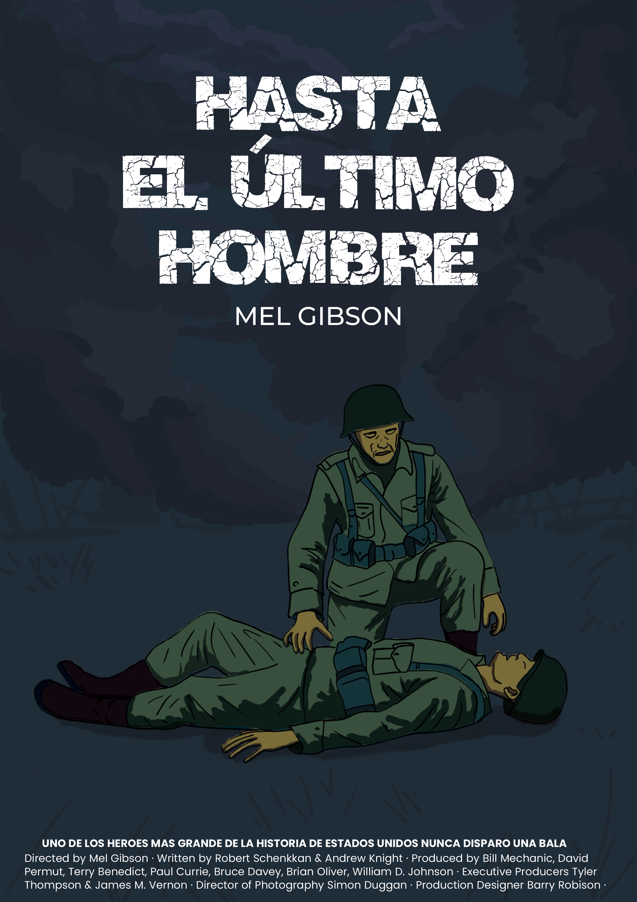
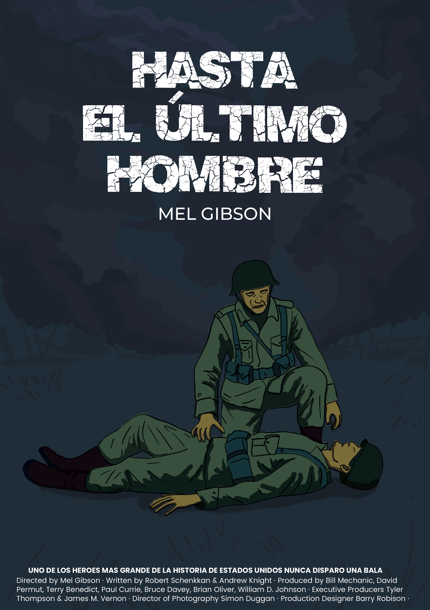
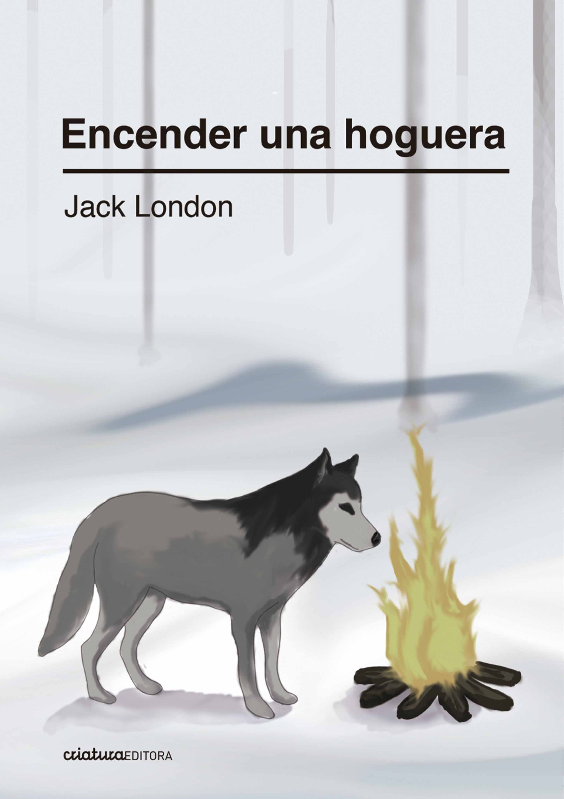

Ilustración
Exploración visual y conceptual a través de distintas técnicas.
Vinilo: Kind of Blue


Diseño integral de vinilo con concepto visual basado en el ritmo y el color del jazz clásico.
Colección de Portadas


Serie de portadas basadas en la reinterpretación visual de obras musicales contemporáneas.
Personaje y Tipografía

Ilustración de personaje original combinando expresividad visual y trabajo tipográfico artesanal.
Pósters de Cine
 

Interpretación visual de películas icónicas, buscando transmitir atmósfera y narrativa mediante color y composición.
Tapas de libros


Diseño de tapa editorial explorando la tensión entre la luz y la oscuridad como metáfora visual del relato.